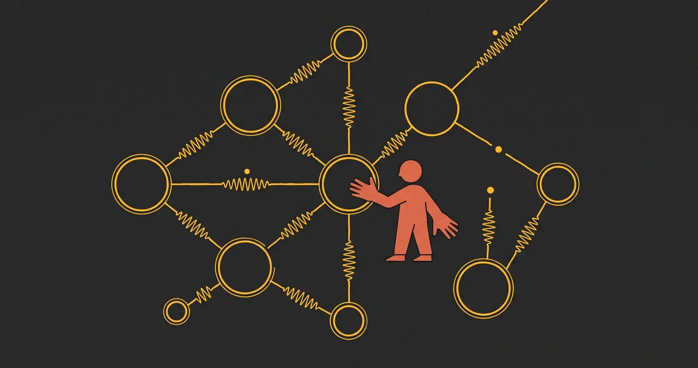

Xcode, Swift and the tools for those who build

WWDC was born as a developer conference, and this is the area that gathers its technical soul: news on Swift, Xcode, frameworks and SDKs, the APIs that open new possibilities for apps. Less spectacle, more substance: the decisions that will steer the work of hundreds of thousands of developers.
WWDC 2026 brings Swift 6.4 with SwiftUI updates, new testing and debugging tools in Xcode 27, and the Core AI framework replacing Core ML as the backbone of on-device intelligence.
Apple introduced Core AI at WWDC 2026, replacing Core ML with a framework designed natively for large foundation models. The renaming signals a shift from custom-model inference to system-level LLM and multimodal integration.
iOS 27 adds 'Else If' block support to Shortcuts, filling a long-requested gap that forced power users to simulate branching logic with verbose nested structures.
The MacRumors live blog documents a split reaction from the developer community: enthusiasm for Foundation Models and Xcode 27, but sharp criticism of the WWDC 2026 keynote format, described by several comments as the worst in recent memory.
Apple announced the winners of the 2026 Apple Design Awards during WWDC week, selecting 12 apps and games from the 36 previously announced finalists. The awards recognize technical excellence, design, and innovation.
Apple has opened Xcode 27 to third-party plugins via an agent-client protocol supporting skills, MCP tools, and AI agents. Figma and GitHub will be available at launch, while Anthropic, OpenAI, and Google will bring their coding agents into the IDE.
During the Platforms State of the Union Apple used Notion as an emblematic example of an app abandoning web-based cross-platform UI technologies in favor of native SwiftUI, aiming for better performance and system consistency.
Apple's open-source ML research framework gains Metal 4 support and the ability to scale model training across multiple Macs connected via Thunderbolt, using RDMA to reduce data transfer latency.
Xcode 27's coding assistant gains two new concrete capabilities: automatic app localization and integration with custom server-side skills, extending agentic possibilities beyond on-device limits.
A WWDC technical session clarifies the fundamental operational constraint for new CarPlay video apps: playback is only permitted when the vehicle is parked, in line with distracted driving regulations.
Apple has made over a hundred new video sessions available on tools, technologies and design, alongside live Group Labs with Q&A sessions led by Apple engineers. All freely accessible on the Apple Developer app, website and YouTube.
At the Platforms State of the Union, Apple confirmed the Foundation Models framework core will go open source before the end of summer 2026, ahead of the public iOS 27 launch in fall.
At the Platforms State of the Union, Apple introduced Dynamic Profiles, a Foundation Models feature enabling multi-agent pipelines where different model instances collaborate on complex tasks.
At the Platforms State of the Union, Apple announced free access to Apple Foundation Models on Private Cloud Compute for developers with fewer than two million App Store downloads, removing infrastructure costs as a barrier.
A day after the event, Apple released a five-minute summary video covering the main themes of the Platforms State of the Union: rebuilt Foundation Models, cross-platform design changes, and substantial developer tools updates.
Apple released version 11.0 of the Apple Developer app alongside WWDC, featuring a complete Liquid Glass redesign and WWDC 2026-themed stickers usable directly in Messages.
The agentic coding assistant in Xcode 27 doesn't just suggest code: it can generate, build, and simulate an entire application autonomously, without the developer manually triggering a build.
With iOS 27 and macOS Golden Gate, the Foundation Models framework lets developers pass images as direct input to on-device models, opening new scenarios for visual analysis apps without cloud dependency.
SwiftUI gains native drag-to-reorder, nested layouts that resize up to twice as fast, and a new Spatial Preview Framework for streaming 3D models from Mac into physical space.
Xcode 27 drops Intel support, is 30% smaller, and introduces Device Hub to unify simulators and physical devices in one panel. Xcode Cloud build speeds double.
At the State of the Union, Apple announced Foundation Models will go open source later this summer, and introduced Core AI, a new on-device framework built specifically for Apple Silicon.
Small-group sessions with Apple engineers on Foundation Models, App Intents, and Apple Intelligence filled fastest, with a notable concentration of developers working on health, productivity, and creative apps.
Apple has introduced a public Swift interface in iOS 27 that lets developers swap AI providers — from on-device to Gemini or Claude — by updating a single Swift Package Manager dependency, with no changes to application code.
Apple announced a substantial App Store update with new subscription management tools, AI-powered personalized recommendations, and advanced marketing features to help developers attract more users.
Apple has updated the Game Porting Toolkit with AI agents that automate parts of the game conversion process to macOS, reducing the manual work required from developers.
iOS 27 ships new adaptive layout APIs in SwiftUI and UIKit for foldable displays, including hinge-state detection and multi-configuration display handling. The foldable iPhone itself wasn't announced at the keynote, but the framework arrives now to give developers a head start before the expected September hardware launch.
Apple has officially deprecated SiriKit: App Intents is now the only supported way to integrate apps with Siri. Xcode 27 also ships on-device, multi-line code completion powered by an Apple Intelligence model running locally on Apple Silicon.
Apple released developer betas of iOS 27, iPadOS 27, macOS Golden Gate, watchOS 27, tvOS 27, and visionOS 27 immediately after the keynote. The public beta arrives in July, general release in fall.
Among the Safari announcements at WWDC 2026 is support for vibe coding extensions — the paradigm where you describe in plain language what you want to build and AI writes the code. A direct signal to the next generation of developers.
At WWDC 2026, Apple introduced agentic capabilities in Xcode — including full app simulation — and unveiled Core AI as the successor to Core ML, with image input, custom skills, and server models in the Foundation Models API.
Apple now allows developers to integrate Apple Intelligence into their apps via familiar APIs, bring third-party AI models into the ecosystem, and use images — not just text — as input to the model.
Apple has revealed the 36 finalists for the 2026 Apple Design Awards across six categories. Winners will be announced in the coming weeks.
Apple selected 350 winners for the 2026 Swift Student Challenge, including 50 Distinguished Winners invited to Cupertino for a three-day experience during WWDC week.
Apple has published the official WWDC26 schedule: more than 100 technical videos, interactive Group Labs with Apple engineers, and the opening keynote on Monday, June 8.
The new iOS, iPadOS and macOS releases
Apple Intelligence and the new Siri
The visual language and interfaces
visionOS and spatial computing
Health, fitness and watchOS
iCloud, Continuity and the ecosystem
Privacy and security